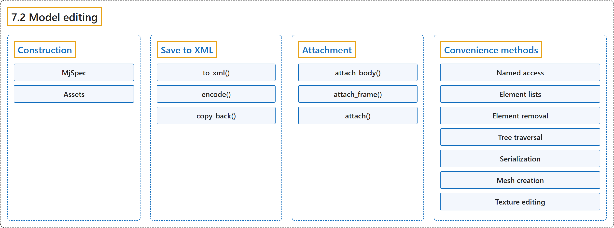

7.2 Model editing
Classification

Glossary
| Term | Definition | 中文翻译 | Source |
|---|---|---|---|
| 7.2 Model editing 模型编辑 |
(No definition) | （无定义） | Google DeepMind, n.d., "Model editing" |
| Construction 构造 |
(context) "The MjSpec object wraps the mjSpec struct and can be constructed in three ways:" | （语境）MjSpec 对象封装了 mjSpec 结构体，可以用三种方式构造： | Google DeepMind, n.d., "Construction", para. 1 |
| MjSpec MjSpec 类 |
"The MjSpec object wraps the mjSpec struct and can be constructed in three ways:" | MjSpec 对象封装了 mjSpec 结构体，可以用三种方式构造： | Google DeepMind, n.d., "Construction", para. 1 |
| from_string() from_string() 方法 |
(context) "Note the from_string() and from_file() methods can only be called at construction time." | （语境）注意，from_string() 和 from_file() 方法只能在构造时调用。 | Google DeepMind, n.d., "Construction", para. 2 |
| from_file() from_file() 方法 |
(context) "Note the from_string() and from_file() methods can only be called at construction time." | （语境）注意，from_string() 和 from_file() 方法只能在构造时调用。 | Google DeepMind, n.d., "Construction", para. 2 |
| Assets 资源 |
"MuJoCo optionally uses a Virtual File System (VFS) to load assets (like meshes and textures) from memory." | MuJoCo 可选地使用虚拟文件系统（VFS）从内存加载资源（如网格和纹理）。 | Google DeepMind, n.d., "Assets", para. 1 |
| MjVfs MjVfs 类 |
"The Python bindings provide the mujoco.MjVfs as a wrapper around the mjVFS C struct." | Python 绑定提供 mujoco.MjVfs，作为 mjVFS C 结构体的封装。 | Google DeepMind, n.d., "Assets", para. 2 |
| Save to XML 保存为 XML |
"MjSpec objects can be saved to an XML string with the to_xml() method." | MjSpec 对象可以用 to_xml() 方法保存为 XML 字符串。 | Google DeepMind, n.d., "Save to XML", para. 1 |
| to_xml() to_xml() 方法 |
"Unlike mj_saveXMLString, to_xml() compiles the spec before it saves it: the spec must compile, with its assets, and the compilation changes it as mj_compile says, for example by applying fusestatic." | 与 mj_saveXMLString 不同，to_xml() 在保存之前先编译 spec：spec 连同其资源必须能编译，而且编译会按 mj_compile 所述改变它，例如应用 fusestatic。 | Google DeepMind, n.d., "Save to XML", para. 1 |
| encode() encode() 方法 |
"Alternatively, specs or compiled models can be serialized to a file using encode():" | 另外，spec 或编译后的模型也可以用 encode() 序列化到文件： | Google DeepMind, n.d., "Save to XML", para. 2 |
| copy_back() copy_back() 方法 |
"Values which were changed in a compiled model can be written to the spec itself with copy_back()." | 在编译后的模型中被修改的值可以用 copy_back() 写回 spec 本身。 | Google DeepMind, n.d., "Save to XML", para. 4 |
| Attachment 附加 |
"It is possible to combine multiple specs by using attachments." | 可以通过附加把多个 spec 组合起来。 | Google DeepMind, n.d., "Attachment", para. 1 |
| attach_body() attach_body() 方法 |
"Attach a body from the child spec to a frame in the parent spec: body.attach_body(body, prefix, suffix), returns the reference to the attached body, which should be identical to the body used as input." | 把子 spec 中的一个刚体附加到父 spec 中的一个 frame 上：body.attach_body(body, prefix, suffix)，返回对被附加刚体的引用，它应与作为输入的刚体相同。 | Google DeepMind, n.d., "Attachment", item 1 |
| attach_frame() attach_frame() 方法 |
"Attach a frame from the child spec to a body in the parent spec: body.attach_frame(frame, prefix, suffix), returns the reference to the attached frame, which should be identical to the frame used as input." | 把子 spec 中的一个 frame 附加到父 spec 中的一个刚体上：body.attach_frame(frame, prefix, suffix)，返回对被附加 frame 的引用，它应与作为输入的 frame 相同。 | Google DeepMind, n.d., "Attachment", item 2 |
| attach() attach() 方法 |
"Attach a child spec to a site in the parent spec: parent_spec.attach(child_spec, site=site_name_or_obj), returns the reference to a frame, which is the attached worldbody transformed into a frame." | 把子 spec 附加到父 spec 中的一个 site 上：parent_spec.attach(child_spec, site=site_name_or_obj)，返回对一个 frame 的引用，即被附加的 worldbody 转换成的 frame。 | Google DeepMind, n.d., "Attachment", item 3 |
| Convenience methods 便捷方法 |
"The Python bindings provide a number of convenience methods and attributes not directly available in the C API in order to make model editing easier:" | Python 绑定提供了一些 C API 中没有直接提供的便捷方法和属性，以便更容易地编辑模型： | Google DeepMind, n.d., "Convenience methods", para. 1 |
| Named access 按名称访问 |
"The MjSpec object has methods like .body(), .joint(), .site(), ... for named access of elements." | MjSpec 对象有 .body()、.joint()、.site() 等方法，用于按名称访问元素。 | Google DeepMind, n.d., "Named access", para. 1 |
| Element lists 元素列表 |
"Lists of all elements in a spec can be accessed using named properties, using the plural form." | spec 中所有元素的列表可以通过以复数形式命名的属性访问。 | Google DeepMind, n.d., "Element lists", para. 1 |
| Element removal 元素删除 |
"The method delete() removes the corresponding element from the spec," | 方法 delete() 从 spec 中删除相应的元素， | Google DeepMind, n.d., "Element removal", para. 1 |
| Tree traversal 树遍历 |
"Traversal of the kinematic tree is aided by the following methods which return tree-related lists of elements:" | 运动学树的遍历借助以下返回与树相关的元素列表的方法： | Google DeepMind, n.d., "Tree traversal", para. 1 |
| Direct children 直接子元素 |
"Like the spec-level element lists described above, bodies have properties which return lists of all direct children." | 与上面介绍的 spec 级元素列表类似，刚体有返回其所有直接子元素列表的属性。 | Google DeepMind, n.d., "Tree traversal", item 1 |
| Recursive search 递归查找 |
"body.find_all() returns a list of all elements of the given type which are in the subtree of the given body." | body.find_all() 返回给定刚体子树中所有给定类型元素的列表。 | Google DeepMind, n.d., "Tree traversal", item 2 |
| Parent 父元素 |
"The parent body of a given element – including bodies and frames – can be accessed via the parent property." | 给定元素（包括刚体和 frame）的父刚体可以通过 parent 属性访问。 | Google DeepMind, n.d., "Tree traversal", item 3 |
| Serialization 序列化 |
"The MjSpec object can be serialized with all of its assets using the function spec.to_zip(file), where file can be either a path to a file or a file object." | MjSpec 对象可以用函数 spec.to_zip(file) 连同其全部资源一起序列化，其中 file 可以是文件路径或文件对象。 | Google DeepMind, n.d., "Serialization", para. 1 |
| Mesh creation 网格创建 |
"The mjsMesh object includes convenience methods for model creation with named attributes, corresponding to the mesh/builtin semantics." | mjsMesh 对象包含用命名属性创建模型的便捷方法，对应 mesh/builtin 的语义。 | Google DeepMind, n.d., "Mesh creation", para. 1 |
| Texture editing 纹理编辑 |
"The mjsTexture buffer option stores the texture bytes in the data attribute." | mjsTexture 的缓冲区选项把纹理字节存储在 data 属性中。 | Google DeepMind, n.d., "Texture editing", para. 1 |
References
Google DeepMind. (n.d.). Python. MuJoCo Documentation (Version 3.17.0). Retrieved October 31, 2026, from https://mujoco.readthedocs.io/en/stable/python.html